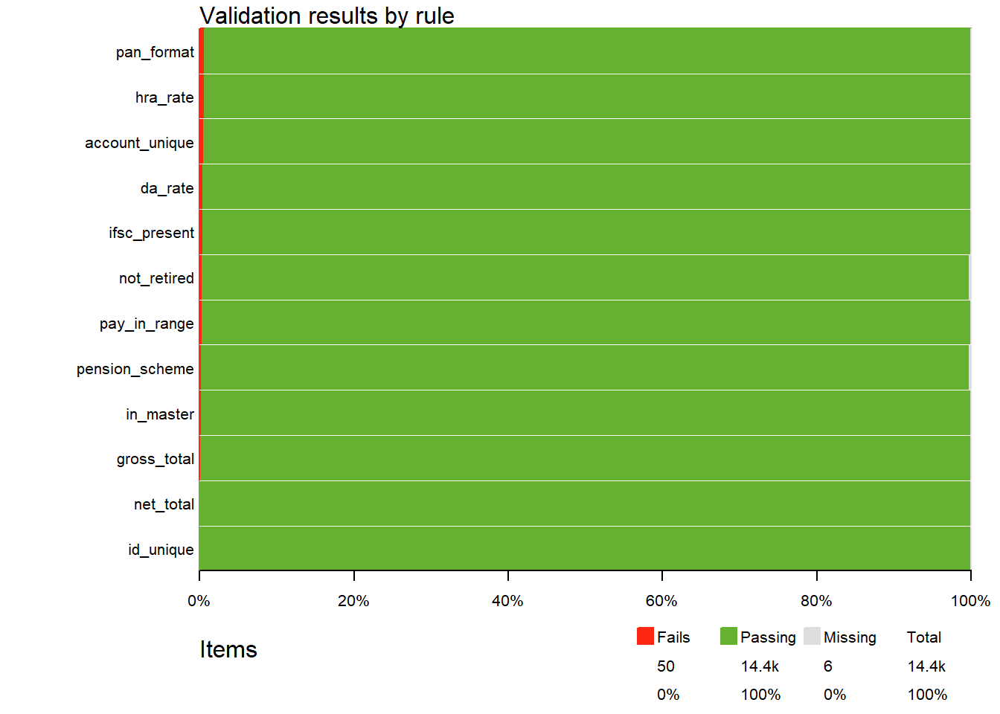

29 Rule-Based Validation
Much of audit is checking whether things were done by the rules. Pay must be within the scale of the post. Dearness allowance must be at the rate in force. Nobody may be paid after retirement. A bill must add up. Every one of these is a rule that can be written down precisely, and every rule that can be written down precisely can be checked by R, on every record, in seconds.
We have already checked many such rules in this book, one at a time, with filter(). That works, but as the number of rules grows, a pile of separate filter() statements becomes hard to keep track of. Which rules were checked? On which data? How many records failed each? Was anything missed?
In this chapter we learn to keep the rules together as a rule book, apply the whole rule book to the data in one step, and get a summary of every rule with the failing records listed. The package validate does this. The rule book can be kept in a spreadsheet, maintained by the audit team, with the source of each rule recorded against it. At the end we also meet pointblank, which produces a ready report of the results.
Prerequisites
Both packages are on CRAN, and are installed with install.packages(c("validate", "pointblank")).
29.1 Our data, a month’s pay bill
We audit the pay bill of a department for March 2025. There are two tables.
-
master, the employee master: date of birth, date of joining, pay level, city class of the place of posting, pension scheme, PAN, bank IFSC and account number. -
bill, the pay bill: for each employee paid, the basic pay, dearness allowance (DA), house rent allowance (HRA), transport allowance (TA), gross pay, deductions and net pay.
The rules of the game, simplified from the 7th Central Pay Commission rules, are these.
- Basic pay must lie within the range of the employee’s level in the pay matrix.
- DA is 53% of basic pay, the rate in force for our example.
- HRA is 30%, 20% or 10% of basic pay, for cities of class X, Y and Z.
- Gross pay is basic pay plus DA, HRA and TA, and net pay is gross pay less deductions.
- An employee retires on the last day of the month in which he or she attains 60 years. (A person attains an age on the day before the birthday, so someone born on the 1st of a month retires at the end of the previous month.)
- Employees who joined on or after 1 January 2004 are in the National Pension System (NPS); earlier entrants are in the General Provident Fund (GPF) scheme.
- PAN must be in the valid format (Section 19.10), and IFSC must be present and valid.
- No two employees may be paid into the same bank account.
- Everyone in the bill must be in the employee master.
The code creates the two tables, and plants errors of each kind.
Code to create the employee master and the pay bill
set.seed(2025)
pay_matrix <- tibble(
level = 1:14,
min_pay = c(18000, 19900, 21700, 25500, 29200, 35400, 44900, 47600, 53100, 56100,
67700, 78800, 123100, 144200),
max_pay = c(56900, 63200, 69100, 81100, 92300, 112400, 142400, 151100, 167800, 177500,
208700, 209200, 215900, 218200)
)
n <- 1200
make_pan <- function(k) {
paste0(map_chr(1:k, \(i) paste(sample(LETTERS, 3, TRUE), collapse = "")), "P",
sample(LETTERS, k, TRUE), sprintf("%04d", sample(1:9999, k, TRUE)), sample(LETTERS, k, TRUE))
}
master <- tibble(
emp_id = sprintf("E%05d", 1:n),
dob = as.Date("1966-01-01") + sample(0:(365 * 37), n, TRUE)
) |>
mutate(doj = pmin(dob + round(365.25 * runif(n, 21, 35)), as.Date("2024-12-01")),
level = sample(1:14, n, TRUE, prob = c(8, 8, 7, 9, 8, 9, 10, 8, 7, 8, 6, 5, 4, 3)),
city_class = sample(c("X", "Y", "Z"), n, TRUE, prob = c(0.3, 0.4, 0.3)),
pension_scheme = if_else(doj >= as.Date("2004-01-01"), "NPS", "GPF"),
pan = make_pan(n),
ifsc = paste0(sample(c("SBIN", "PUNB", "CNRB", "UBIN", "BARB"), n, TRUE), "0",
sprintf("%06d", sample(1:999999, n, TRUE))),
account_no = sprintf("%011.0f", runif(n, 1e10, 9.99e10)))
# Planted. Four employees who retired in 2024 are still in the master
retired <- sample(n, 4)
master$dob[retired] <- as.Date(c("1964-03-15", "1964-07-01", "1964-09-20", "1964-11-05"))
bill <- master |>
left_join(pay_matrix, by = "level") |>
mutate(basic_pay = round(min_pay + (max_pay - min_pay) * runif(n()) ^ 1.5, -2))
pick <- function(k, from = seq_len(nrow(bill))) sample(from, k)
# Planted. Basic pay above the maximum, or below the minimum, of the level
r_hi <- pick(3); bill$basic_pay[r_hi] <- bill$max_pay[r_hi] + c(5000, 12000, 30000)
r_lo <- pick(1); bill$basic_pay[r_lo] <- bill$min_pay[r_lo] - 2000
bill <- bill |>
mutate(da = round(0.53 * basic_pay),
hra = round(c(X = 0.30, Y = 0.20, Z = 0.10)[city_class] * basic_pay),
ta = case_when(level >= 9 ~ 7200, level >= 3 ~ 3600, TRUE ~ 1800))
# Planted. DA paid at 55% instead of 53%
r_da <- pick(6); bill$da[r_da] <- round(0.55 * bill$basic_pay[r_da])
# Planted. HRA at the X-class rate for employees posted in Z-class cities
r_hra <- pick(8, which(bill$city_class == "Z")); bill$hra[r_hra] <- round(0.30 * bill$basic_pay[r_hra])
bill <- bill |>
mutate(gross = basic_pay + da + hra + ta,
pension_contrib = if_else(pension_scheme == "NPS", round(0.10 * (basic_pay + da)),
round(0.08 * basic_pay)),
income_tax = round(pmax(0, gross - 60000) * 0.12),
net_pay = gross - pension_contrib - income_tax)
# Planted. Gross pay with TA added twice
r_gross <- pick(2); bill$gross[r_gross] <- bill$gross[r_gross] + bill$ta[r_gross]
bill$net_pay[r_gross] <- bill$net_pay[r_gross] + bill$ta[r_gross]
# Planted. Post-2004 entrants shown under GPF in the master
r_gpf <- pick(3, which(master$pension_scheme == "NPS")); master$pension_scheme[r_gpf] <- "GPF"
# Planted. PAN in an invalid format, and IFSC missing
r_pan <- pick(5); master$pan[r_pan] <- c("ABCDE1234", "AAAPX1234", "ABCP12345K", "abcpk1234q", "AB CPK1234Q")
r_ifsc <- pick(2); master$ifsc[r_ifsc] <- NA
# Planted. Two pairs of employees paid into the same account
r_acc <- pick(4); master$account_no[r_acc[3:4]] <- master$account_no[r_acc[1:2]]
bill <- bill |>
select(emp_id, level, city_class, basic_pay, da, hra, ta, gross,
pension_contrib, income_tax, net_pay)
# Planted. Three employees in the bill who are not in the master
strangers <- bill |> slice_sample(n = 3) |> mutate(emp_id = sprintf("E9%04d", 1:3))
bill <- bind_rows(bill, strangers)master# A tibble: 1,200 × 9
emp_id dob doj level city_class pension_scheme pan ifsc
<chr> <date> <date> <int> <chr> <chr> <chr> <chr>
1 E00001 1968-07-20 1999-09-14 12 Y GPF POMPS6556D CNRB…
2 E00002 1971-06-08 1995-09-06 1 Y GPF YQIPD7849Q UBIN…
3 E00003 1966-10-06 1990-07-13 1 Z GPF YCNPH3109C CNRB…
4 E00004 1992-08-17 2017-04-20 8 X NPS BRIPT7037K PUNB…
5 E00005 1988-12-09 2012-02-19 10 Y NPS MSDPX4673T CNRB…
6 E00006 1991-12-17 2014-11-28 7 Z NPS CCXPM4074F CNRB…
7 E00007 1978-06-23 2008-04-07 11 Z NPS MKMPY7210T CNRB…
8 E00008 1999-04-02 2024-12-01 11 Y NPS EWEPS6714G UBIN…
9 E00009 2002-04-21 2024-12-01 7 Y NPS BQTPJ6307C UBIN…
10 E00010 1993-09-11 2023-09-14 9 Y NPS EAJPT5445I CNRB…
# ℹ 1,190 more rows
# ℹ 1 more variable: account_no <chr>bill# A tibble: 1,203 × 11
emp_id level city_class basic_pay da hra ta gross pension_contrib
<chr> <int> <chr> <dbl> <dbl> <dbl> <dbl> <dbl> <dbl>
1 E00001 12 Y 98900 52417 19780 7200 178297 7912
2 E00002 1 Y 26700 14151 5340 1800 47991 2136
3 E00003 1 Z 49600 26288 4960 1800 82648 3968
4 E00004 8 X 65000 34450 19500 3600 122550 9945
5 E00005 10 Y 72000 38160 14400 7200 131760 11016
6 E00006 7 Z 53000 28090 5300 3600 89990 8109
7 E00007 11 Z 79200 41976 7920 7200 136296 12118
8 E00008 11 Y 198400 105152 39680 7200 350432 30355
9 E00009 7 Y 47100 24963 9420 3600 85083 7206
10 E00010 9 Y 100200 53106 20040 7200 180546 15331
# ℹ 1,193 more rows
# ℹ 2 more variables: income_tax <dbl>, net_pay <dbl>
29.2 The rules, one filter() at a time
Before using a package, let us see the plain way, which we already know. To find employees whose DA is not at 53%, allowing a rupee for rounding:
# A tibble: 6 × 3
emp_id basic_pay da
<chr> <dbl> <dbl>
1 E00295 43800 24090
2 E00408 20300 11165
3 E00755 27600 15180
4 E00936 38400 21120
5 E01025 141100 77605
6 E01171 52400 28820This works perfectly for one rule. But we have more than a dozen rules, on two tables. Writing and re-running a dozen such statements, and keeping a record of which passed and which failed, quickly gets untidy. And a rule that silently returns no rows looks the same as a rule that was never run, or one that failed because a column name was mistyped. What we want is to treat the rules as data, kept together, applied together, and reported together.
29.3 A rule book with validator()
First, we bring together the columns the rules need. The bill has the pay figures, the master has the dates and identifiers, and the pay matrix has the limits of each level. We also work out each employee’s date of retirement, as described above, with lubridate (Chapter 16).
rollforward() moves a date to the last day of its month. So the date of retirement is the last day of the month in which the employee attains 60, that is, the day before the 60th birthday.
Now the rule book. validator() takes the rules, each written as an R expression that is TRUE when the rule is met. Each rule gets a short name.
pay_rules <- validator(
# identity and completeness
id_unique = is_unique(emp_id),
in_master = !is.na(dob),
ifsc_present = !is.na(ifsc),
# pay within the level, and the allowances at the right rates
pay_in_range = basic_pay >= min_pay & basic_pay <= max_pay,
da_rate = abs(da - 0.53 * basic_pay) <= 1,
hra_rate = abs(hra - ifelse(city_class == "X", 0.30,
ifelse(city_class == "Y", 0.20, 0.10)) * basic_pay) <= 1,
# the bill adds up
gross_total = gross == basic_pay + da + hra + ta,
net_total = net_pay == gross - pension_contrib - income_tax,
# service conditions
not_retired = retirement_date >= as.Date("2025-03-31"),
pension_scheme = (doj >= as.Date("2004-01-01") & pension_scheme == "NPS") |
(doj < as.Date("2004-01-01") & pension_scheme == "GPF"),
# identifiers
pan_format = grepl("^[A-Z]{3}[PCHFATBLJG][A-Z][0-9]{4}[A-Z]$", pan),
account_unique = is_unique(account_no)
)
pay_rulesObject of class 'validator' with 12 elements:
id_unique : is_unique(emp_id)
in_master : !is.na(dob)
ifsc_present : !is.na(ifsc)
pay_in_range : basic_pay >= min_pay & basic_pay <= max_pay
da_rate : abs(da - 0.53 * basic_pay) <= 1
hra_rate : abs(hra - ifelse(city_class == "X", 0.3, ifelse(city_class == "Y", 0.2, 0.1)) * basic_pay) <= 1
gross_total : gross == basic_pay + da + hra + ta
net_total : net_pay == gross - pension_contrib - income_tax
not_retired : retirement_date >= as.Date("2025-03-31")
pension_scheme: (doj >= as.Date("2004-01-01") & pension_scheme == "NPS") | (doj < as.Date("2004-01-01") & pension_scheme == "GPF")
pan_format : grepl("^[A-Z]{3}[PCHFATBLJG][A-Z][0-9]{4}[A-Z]$", pan)
account_unique: is_unique(account_no)A few points about the rules.
-
is_unique()comes from validate. It checks that each value occurs only once in the column. - Employees not in the master get
NAfor every master column after the left join, so!is.na(dob)isTRUEonly for those found in the master. - Amounts computed with percentages can differ by a rupee because of rounding, so the rate rules allow a difference of up to ₹1 (Chapter 1 warned against comparing computed decimals with
==). - The PAN pattern requires the fourth character to be one of the holder types (P for an individual, C for a company, and so on), as in Section 19.10.
- validate accepts only certain kinds of expressions as rules: comparisons, logical operators like
&and|, and functions returningTRUEorFALSE. A rule written withifelse()is ignored with a warning, so the pension scheme rule is written with&and|: “joined on or after 2004 and in NPS, or joined before 2004 and in GPF”.
29.4 Confronting the data with the rules
confront() applies every rule to the data, and summary() reports the result of each.
results <- confront(pay_check, pay_rules)
summary(results) name items passes fails nNA error warning
1 id_unique 1203 1203 0 0 FALSE FALSE
2 in_master 1203 1200 3 0 FALSE FALSE
3 ifsc_present 1203 1198 5 0 FALSE FALSE
4 pay_in_range 1203 1199 4 0 FALSE FALSE
5 da_rate 1203 1197 6 0 FALSE FALSE
6 hra_rate 1203 1195 8 0 FALSE FALSE
7 gross_total 1203 1201 2 0 FALSE FALSE
8 net_total 1203 1203 0 0 FALSE FALSE
9 not_retired 1203 1196 4 3 FALSE FALSE
10 pension_scheme 1203 1197 3 3 FALSE FALSE
11 pan_format 1203 1195 8 0 FALSE FALSE
12 account_unique 1203 1196 7 0 FALSE FALSE
expression
1 is_unique(emp_id)
2 !is.na(dob)
3 !is.na(ifsc)
4 basic_pay - min_pay >= -1e-08 & basic_pay - max_pay <= 1e-08
5 abs(da - 0.53 * basic_pay) <= 1
6 abs(hra - ifelse(city_class == "X", 0.3, ifelse(city_class == "Y", 0.2, 0.1)) * basic_pay) <= 1
7 abs(gross - (basic_pay + da + hra + ta)) <= 1e-08
8 abs(net_pay - (gross - pension_contrib - income_tax)) <= 1e-08
9 retirement_date >= as.Date("2025-03-31")
10 (doj >= as.Date("2004-01-01") & pension_scheme == "NPS") | (doj < as.Date("2004-01-01") & pension_scheme == "GPF")
11 grepl("^[A-Z]{3}[PCHFATBLJG][A-Z][0-9]{4}[A-Z]$", pan)
12 is_unique(account_no)Each row is one rule. items is the number of records checked, passes and fails the number that met or broke the rule, and nNA the number where the rule could not be decided because a value was missing. error and warning say whether R could evaluate the rule at all, which catches mistyped column names. expression shows the rule as validate understood it. Notice that validate has rewritten gross == ... with a tiny tolerance, since exact equality of decimals is unsafe.
This one table is the backbone of the audit working paper. Every rule is listed, run or not, passed or not. Let us read it.
-
in_masterfails for 3 records, the employees paid but not in the master. -
pay_in_rangefails for 4, andda_rateandhra_ratefor 6 and 8. -
not_retiredfails for 4, employees paid after their retirement, andpension_schemefor 3. -
not_retiredandpension_schemealso shownNAof 3. These are the employees missing from the master, for whom the dates are empty, so the rules could not be decided. -
ifsc_presentandpan_formatfail for 5 and 8 records, including those same missing employees.!is.na()andgrepl()returnFALSE, notNA, for a missing value, so these rules count a missing value as a failure. How a rule treats missing values depends on how it is written, so read the counts with that in mind.
plot() shows the same as a chart, which is useful for a quick view of many rules.
plot(results)
A rule with nNA greater than zero has not been passed by those records, only left undecided. Never count them as passes. Find out why the values are missing, and decide whether that is a finding in itself, as it is here.
29.5 The failing records
To examine the failures, violating() returns the rows of the data that break any of the given rules. Let us take the DA and HRA rules.
# A tibble: 14 × 7
emp_id city_class basic_pay da hra da_pct hra_pct
<chr> <chr> <dbl> <dbl> <dbl> <dbl> <dbl>
1 E00133 Z 119600 63388 35880 53 30
2 E00295 X 43800 24090 13140 55 30
3 E00408 Z 20300 11165 2030 55 10
4 E00501 Z 53200 28196 15960 53 30
5 E00625 Z 155300 82309 46590 53 30
6 E00690 Z 154200 81726 46260 53 30
7 E00755 X 27600 15180 8280 55 30
8 E00812 Z 82200 43566 24660 53 30
9 E00867 Z 108000 57240 32400 53 30
10 E00932 Z 137400 72822 41220 53 30
11 E00936 X 38400 21120 11520 55 30
12 E01025 Y 141100 77605 28220 55 20
13 E01171 Y 52400 28820 10480 55 20
14 E01192 Z 56400 29892 16920 53 30The DA of six employees has been drawn at 55%, and eight employees in Z-class cities have been given HRA at the X-class rate of 30%. For a full picture, values() gives a TRUE/FALSE matrix with one column per rule and one row per record. Adding it to the data gives each employee’s result on every rule, from which we can count the rules each employee breaks.
rule_matrix <- values(results)
dim(rule_matrix)[1] 1203 12# A tibble: 2 × 2
rules_broken n
<dbl> <int>
1 1 34
2 3 3(The two is_unique() rules are left out of the matrix here, since validate records them in a slightly different way.) For the duplicate bank accounts, we look directly.
# A tibble: 4 × 4
emp_id level account_no net_pay
<chr> <int> <chr> <dbl>
1 E00361 7 67894561325 203911
2 E00642 13 67894561325 201192
3 E00017 9 89763451894 136422
4 E00554 7 89763451894 20671829.6 Valuing the findings
Each failure is checked against the records before it becomes an observation. For the money involved, we compute the excess paid under each rule.
excess <- pay_check |>
mutate(
hra_due = round(c(X = 0.30, Y = 0.20, Z = 0.10)[city_class] * basic_pay),
excess_da = pmax(0, da - round(0.53 * basic_pay)),
excess_hra = pmax(0, hra - hra_due),
paid_after_retirement = if_else(!is.na(retirement_date) & retirement_date < as.Date("2025-03-31"),
net_pay, 0),
paid_not_in_master = if_else(is.na(dob), net_pay, 0)
) |>
summarise(across(c(excess_da, excess_hra, paid_after_retirement, paid_not_in_master), sum))
excess# A tibble: 1 × 4
excess_da excess_hra paid_after_retirement paid_not_in_master
<dbl> <dbl> <dbl> <dbl>
1 6472 173260 579338 366757In one month’s pay bill, about ₹11.3 lakh is at stake, before counting the pay above the scale, the doubtful accounts and the PAN errors. Since pay bills repeat every month, the annual effect of the same errors would be about twelve times as much, which is why such checks are worth running every month and not once a year.
29.7 Keeping the rule book in a spreadsheet
Rules written in R code are fine for the analyst who wrote them. An audit team, however, needs rules that anyone can read, review and keep up to date, along with the source of each rule, so that each failure can be traced to the order it breaks. validate can read the rules from a data frame, with columns rule, name, label and description. Such a table can be kept in Excel and read with readxl::read_excel() (Chapter 9).
rule_book <- tribble(
~name, ~label, ~rule, ~description,
"da_rate", "DA at the rate in force", "abs(da - 0.53 * basic_pay) <= 1", "DA order in force for March 2025: 53% of basic pay",
"pay_in_range", "Basic pay within the level", "basic_pay >= min_pay & basic_pay <= max_pay", "Pay matrix, 7th CPC",
"not_retired", "Not paid after superannuation", "retirement_date >= as.Date('2025-03-31')", "Superannuation at the end of the month of attaining 60",
"in_master", "Paid employee exists in master", "!is.na(dob)", "Internal control: payment only to verified employees",
"pan_format", "PAN in valid format", "grepl('^[A-Z]{3}[PCHFATBLJG][A-Z][0-9]{4}[A-Z]$', pan)", "Income Tax Act; needed for TDS"
)
book_rules <- validator(.data = rule_book)
book_rulesObject of class 'validator' with 5 elements:
da_rate [DA at the rate in force] : abs(da - 0.53 * basic_pay) <= 1
pay_in_range [Basic pay within the level] : basic_pay >= min_pay & basic_pay <= max_pay
not_retired [Not paid after superannuation]: retirement_date >= as.Date("2025-03-31")
in_master [Paid employee exists in master] : !is.na(dob)
pan_format [PAN in valid format] : grepl("^[A-Z]{3}[PCHFATBLJG][A-Z][0-9]{4}[A-Z]$", pan)The labels and descriptions travel with the rules, so the summary can be joined back to the rule book to produce a readable table for the working papers.
label items passes fails nNA
1 DA at the rate in force 1203 1197 6 0
2 Basic pay within the level 1203 1199 4 0
3 Not paid after superannuation 1203 1196 4 3
4 Paid employee exists in master 1203 1200 3 0
5 PAN in valid format 1203 1195 8 0
description
1 DA order in force for March 2025: 53% of basic pay
2 Pay matrix, 7th CPC
3 Superannuation at the end of the month of attaining 60
4 Internal control: payment only to verified employees
5 Income Tax Act; needed for TDSBuild one rule book for each recurring audit area, such as pay bills, pension, contracts or a scheme, and keep it with the audit programme. Each year, update the rates and limits, add the rules suggested by last year’s findings, and re-run the whole book on the new data. Over time, the rule book becomes the team’s institutional memory, and new members can see at once what is checked and why.
29.8 A ready report with pointblank
The package pointblank does a similar job with a different style. Instead of a rule book, we build an agent, give it a series of validation steps, and let it interrogate the data. Its strength is the report it produces, a formatted table of every step with the share of records that passed, which can be shared directly.
library(pointblank)
agent <- create_agent(tbl = pay_check, tbl_name = "Pay bill, March 2025",
label = "Pay bill checks") |>
rows_distinct(columns = vars(emp_id)) |>
col_vals_not_null(columns = vars(ifsc)) |>
col_vals_between(columns = vars(basic_pay), left = vars(min_pay), right = vars(max_pay)) |>
col_vals_expr(expr = expr(abs(da - 0.53 * basic_pay) <= 1)) |>
col_vals_regex(columns = vars(pan), regex = "^[A-Z]{3}[PCHFATBLJG][A-Z][0-9]{4}[A-Z]$") |>
col_vals_gte(columns = vars(retirement_date), value = as.Date("2025-03-31")) |>
interrogate()Printing the agent gives the report.
agentEach row is a step, with the number of records tested, and the number and share that passed and failed. Missing values count as failures in pointblank by default (the argument na_pass changes this), which is why the steps involving master columns show a few more failures than validate did. get_sundered_data() splits the data into the rows that passed every step and those that failed at least one.
failed_rows <- get_sundered_data(agent, type = "fail")
nrow(failed_rows)[1] 24pointblank can also set action levels, such as a warning if more than 1% of records fail a step, and stopping a process if more than 5% do. This is useful when the same checks are run every month on data received from a department, as an early warning that something has gone wrong with the data itself.
Which package to use? validate suits audit work where the rule book itself is the main product: rules kept as data, with labels and sources, applied to many data sets. pointblank suits repeated checks on incoming data with a polished report. Both are good, and they can be used together, as here.
29.9 A suggested workflow
- Collect the rules from the acts, rules, orders and manuals governing the area, and note the source of each.
- Write them as a rule book, in a spreadsheet, with a name, label, rule and description for each.
- Prepare the data: join the tables the rules need, and compute derived values like the date of retirement.
- Confront the data with the rule book, and read the summary, rule by rule. Check rules with errors, warnings or missing values first.
-
List the failing records with
violating(), and examine them against the documents. - Value the findings, and project the effect over the year where the data repeats.
- Report the summary table with the rule sources, or a pointblank report.
- Maintain the rule book: update rates, and add rules from new findings.
- Many audit checks are rules that can be written exactly. Keep them together as a rule book, not as scattered filters.
-
validator()holds the rules,confront()applies them,summary()reports every rule, andviolating()lists the failing records. - Records with missing values are undecided, not passed.
- Keep the rule book in a spreadsheet, with the source of each rule, so that the team can review and update it.
- A rule failure is a lead to be verified against documents, like every other analytic finding.
29.10 Summary of functions used
| Function | Package | What it does |
|---|---|---|
validator(), validator(.data = )
|
validate | Create a rule book, from expressions or from a data frame of rules |
confront() |
validate | Apply the rules to the data |
summary(), plot()
|
validate | Passes, fails and missing values for each rule |
violating() |
validate | Rows that break the rules |
values() |
validate | Result of every rule for every record, as a matrix |
is_unique() |
validate | Rule that each value of a column occurs only once |
rollforward(), %m+%
|
lubridate | Last day of the month, and adding years to dates safely |
create_agent(), interrogate()
|
pointblank | Set up and run validation steps |
rows_distinct(), col_vals_not_null(), col_vals_between(), col_vals_expr(), col_vals_regex(), col_vals_gte()
|
pointblank | Validation steps |
get_sundered_data() |
pointblank | Split the data into passing and failing rows |